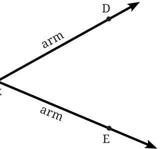
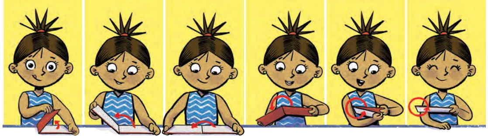
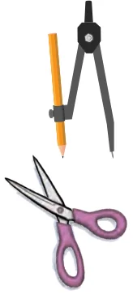
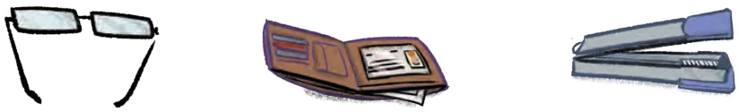
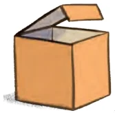
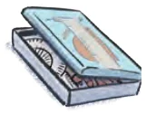
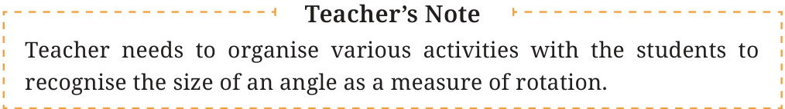

<!DOCTYPE html>
<html lang="en">
<head>
<meta charset="UTF-8">
<meta name="viewport" content="width=device-width,initial-scale=1">
<title>2.5 Angle D — Lines and Angles</title>
<meta name="description" content="Class 6 Mathematics · Lines and Angles · 2.5 Angle D">
<link rel="icon" href="data:image/svg+xml,<svg xmlns='http://www.w3.org/2000/svg' viewBox='0 0 100 100'><text y='.9em' font-size='90'>📘</text></svg>">
<link rel="stylesheet" href="../../../assets/book.css">
<link rel="stylesheet" href="https://cdn.jsdelivr.net/npm/katex@0.16.11/dist/katex.min.css" crossorigin="anonymous">
</head>
<body>
<header class="topbar">
<div class="topbar-in">
  <div class="crumb">
    <span class="c1"><a href="../../../index.html">Library</a> · <a href="../../index.html">Class 6 Mathematics</a></span>
    <span class="c2">Lines and Angles · 2.5 Angle D</span>
  </div>
  <a class="tb-btn" data-nav="prev" href="../../02-lines-and-angles/05-figure-it-out/index.html" title="Figure it Out">←</a>
  <details class="drawer"><summary class="tb-btn" title="Sections in this chapter">☰</summary>
<div class="drawer-panel"><div class="dh">Lines and Angles</div><a href="../01-chapter-opener/index.html">Chapter opener; 2.1 Point</a><a href="../02-line-segment-2.2/index.html">2.2 Line Segment</a><a href="../03-line-2.3/index.html">2.3 Line</a><a href="../04-ray-2.4/index.html">2.4 Ray</a><a href="../05-figure-it-out/index.html">Figure it Out</a><a href="../06-angle-d-2.5/index.html" aria-current="page">2.5 Angle D</a><a href="../07-figure-it-out/index.html">Figure it Out</a><a href="../08-comparing-angles-2.6/index.html">2.6 Comparing Angles</a><a href="../09-figure-it-out/index.html">Figure it Out</a><a href="../10-making-rotating-arms-2.7/index.html">2.7 Making Rotating Arms</a><a href="../11-special-types-of-angles-2.8/index.html">2.8 Special Types of Angles</a><a href="../12-figure-it-out/index.html">Figure it Out</a><a href="../13-figure-it-out/index.html">Figure it Out</a><a href="../14-measuring-angles-2.9/index.html">2.9 Measuring Angles</a><a href="../15-degree-measures-of-different-angles/index.html">Degree measures of different angles</a><a href="../16-unlabelled-protractor/index.html">Unlabelled protractor</a><a href="../17-figure-it-out/index.html">Figure it Out</a><a href="../18-labelled-protractor/index.html">Labelled protractor</a><a href="../19-figure-it-out/index.html">Figure it Out</a><a href="../20-figure-it-out/index.html">Figure it Out</a><a href="../21-drawing-angles-2.10/index.html">2.10 Drawing Angles</a><a href="../22-figure-it-out/index.html">Figure it Out</a><a href="../23-types-of-angles-and-their-measures-2.11/index.html">2.11 Types of Angles and their Measures</a><a href="../24-figure-it-out/index.html">Figure it Out</a><a href="../25-figure-it-out/index.html">Figure it Out</a><a href="../26-summary/index.html">Summary</a><a href="../27-solutions/index.html">CHAPTER 2 — SOLUTIONS</a></div></details>
  <a class="tb-btn" data-nav="next" href="../../02-lines-and-angles/07-figure-it-out/index.html" title="Figure it Out">→</a>
  <button class="tb-btn" data-theme-toggle title="Toggle light / dark" aria-label="Toggle light or dark theme">◐</button>
</div>
<div class="progress"><span style="width:10.3%"></span></div>
</header>
<main class="wrap">
<div class="sec-head">
  <p class="eyebrow"><a href="../index.html">Chapter 2 · Lines and Angles</a></p>
  <h1>2.5 Angle D</h1>
  <p class="sec-meta">Textbook pages 5–7 · 10 figures</p>
</div>
<article class="prose">
<figure class="fig side-fig"></figure>
<p>An angle is formed by two rays having a common starting point. Here is an angle formed by rays BD and BE where B is vertex the common starting point (Fig. 2.8). The point B is called the vertex of the angle, and the rays BD and BE are called Fig. 2.8 the arms of the angle. How can we name this angle? We can simply use the vertex and say that it is the Angle B. To be clearer, we use a point on each of the arms together with the vertex to name the angle. In this case, we name the angle as Angle DBE or Angle EBD. The word angle can be replaced by the symbol ‘ \(\angle\) ’, i.e., \(\angle DBE\) or \(\angle EBD\). Note that in specifying the angle, the vertex is always written as the middle letter. To indicate an angle, we use a small curve at the vertex (refer to Fig. 2.9). Vidya has just opened her book. Let us observe her opening the cover of the book in different scenarios.</p>
<figure class="fig wide"></figure>
<p>Case 1 Case 2 Case 3 Case 4 Case 5 Case 6</p>
<p>Do you see angles being made in each of these cases? Can you mark their arms and vertex? Which angle is greater - the angle in Case 1 or the angle in Case 2? Just as we talk about the size of a line based on its length, we also talk about the size of an angle based on its amount of rotation. So, the angle in Case 2 is greater as in this case she needs to rotate the cover more. Similarly, the angle in Case 3 is even larger than that of Case 2, because there is even more rotation, and Cases 4, 5, and 6 are successively larger angles with more and more rotation.</p>
<p>The size of an angle is the amount of rotation or turn that is needed about the vertex to move the first ray to the second ray.</p>
<p>Final position of ray</p>
<aside class="sidenote"><p>Amount of turn is the size of the angle</p></aside>
<p>Vertex Initial position of ray</p>
<p class="caption">Fig. 2.9</p>
<p>Let’s look at some other examples where angles arise in real life by rotation or turn:</p>
<ul class="qlist">
<li><span class="mk">•</span><span class="lt">In a compass or divider, we turn the arms to form</span></li>
</ul>
<figure class="fig side-fig"></figure>
<p>an angle. The vertex is the point where the two arms are joined. Identify the arms and vertex of the angle.</p>
<ul class="qlist">
<li><span class="mk">•</span><span class="lt">A pair of scissors has two blades. When we open</span></li>
</ul>
<p>them (or ‘turn them’) to cut something, the blades form an angle. Identify the arms and the vertex of the angle.</p>
<ul class="qlist">
<li><span class="mk">•</span><span class="lt">Look at the pictures of spectacles, wallet and other common</span></li>
</ul>
<p>objects. Identify the angles in them by marking out their arms and vertices.</p>
<figure class="fig wide"></figure>
<figure class="fig"></figure>
<figure class="fig"></figure>
<p>Do you see how these angles are formed by turning one arm with respect to the other?</p>
<figure class="fig wide"></figure>
</article>
<nav class="pager"><a class="" data-nav="prev" href="../../02-lines-and-angles/05-figure-it-out/index.html"><span class="dir">← Previous</span><span class="t">Figure it Out</span><span class="ch">Lines and Angles</span></a><a class="nx" data-nav="next" href="../../02-lines-and-angles/07-figure-it-out/index.html"><span class="dir">Next →</span><span class="t">Figure it Out</span><span class="ch">Lines and Angles</span></a></nav>
</main><footer class="site">Generated from the source textbook PDFs · text, figures and exercises belong to their respective publishers.</footer><script defer src="https://cdn.jsdelivr.net/npm/katex@0.16.11/dist/katex.min.js" crossorigin="anonymous"></script>
<script defer src="https://cdn.jsdelivr.net/npm/katex@0.16.11/dist/contrib/auto-render.min.js" crossorigin="anonymous"
  onload="renderMathInElement(document.body,{delimiters:[
    {left:'\\(',right:'\\)',display:false},
    {left:'$$',right:'$$',display:true},
    {left:'\\[',right:'\\]',display:true}],throwOnError:false,ignoredTags:['script','noscript','style','textarea','pre','code']})"></script>
<script src="../../../assets/book.js"></script>
<script defer src="../../../../assets/search.js?v=1789782769"></script>
<script defer src="../../../../assets/screenshot.js?v=2"></script>
</body>
</html>
